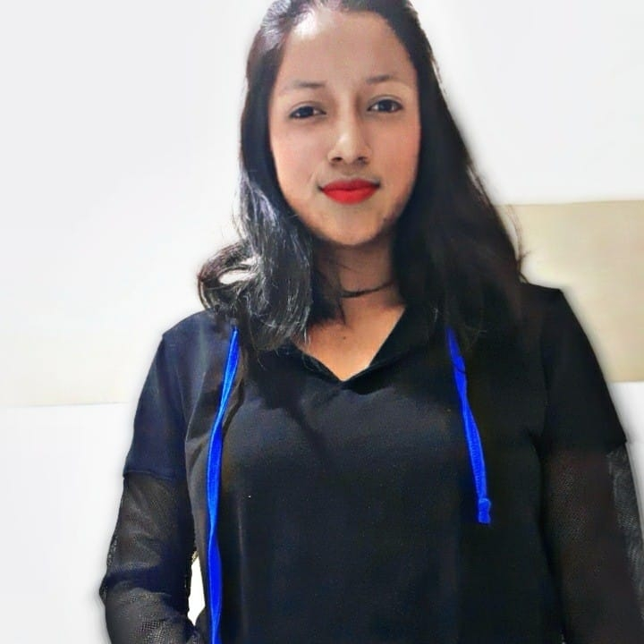

MAYVELIN JOMARA PINTA PUGLLA
Actualmente me encuentro cursando el segundo ciclo de la carreca de COMPUTACION,
en la Universidad Nacional de Loja.
Las virtudes principales que poseo es:ser resopnsable, aprender facilmente sobre cualquier
tema,tengo actitud de servicio y soy muy puntual.